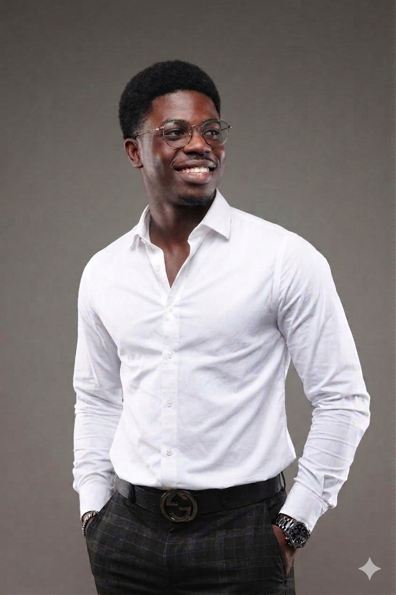

Bienvenue à la DIC
Rejoignez une communauté dynamique d'étudiants passionnés par l'innovation et le développement
Qui sommes-nous ?
Le Digital Innovation Club (DIC) est une communauté d'étudiants passionnés par les technologies numériques, la recherche, l'innovation et l'entrepreneuriat. Notre ambition est de former une nouvelle génération de développeurs, d'ingénieurs et de leaders capables de créer des solutions technologiques répondant aux défis de demain.
Notre Vision
Former des étudiants compétents, innovants et ambitieux capables de transformer leurs connaissances académiques en compétences professionnelles, projets concrets et startups à fort impact.
Notre Mission
Offrir un environnement d'apprentissage pratique, favoriser l'innovation, accompagner les étudiants dans leurs projets et préparer les futurs leaders du numérique.
Nos Valeurs
- Innovation
- Excellence
- Leadership
- Collaboration
- Discipline
- Partage des connaissances
Notre Bureau Exécutif
Une équipe engagée qui œuvre chaque jour pour accompagner les étudiants dans leur progression académique et technologique.

Mr Ricardo
PrésidentAssure la direction stratégique du club, coordonne les activités et représente officiellement le Digital Innovation Club.

FOLARIN Mourchid
Vice-présidentCoordonne les projets technologiques, supervise les ateliers techniques et accompagne les équipes lors des compétitions.

Colombe
Secrétaire GénéraleGère l'administration du club, les comptes rendus, la communication interne et l'organisation des réunions.

Ezechiel
Responsable TechniqueEncadre les formations techniques, accompagne les membres dans leurs projets et veille à l'innovation du club.